Week 9: Design Science Research
🎯 This Week's Focus
Week 9 covers Design Science Research (DSR), starting from its foundations (Hevner et al., 2004) through modern extensions on positioning (Gregor & Hevner, 2013), genres of inquiry (Baskerville et al., 2015), and validity (Larsen et al., 2025). Two applied DSR papers demonstrate the methodology in action: guardrails for human-AI ecologies (Grisold et al., 2025) and expert-augmented few-shot learning for medicine (Liu et al., 2025). Key question: How do we design, evaluate, and validate IT artifacts as legitimate research contributions?
📋 This Week's Requirements (Mar 10, 2026)
- Presenter assignments: Hevner (Dante), Gregor & Hevner (Vamsi, Ali), Larsen (Rayna), Baskerville (Kim)
- Ali's assigned papers: Gregor & Hevner (2013) + Grisold et al. (2025)
- DSR Application papers: Grisold (Ali, Dante, Vamsi) and Liu (Kim, Rayna)
- Read all six papers and be ready to discuss how each paper maps to the DSR frameworks.
🔗 فهرست سریع - Quick Navigation
Papers at a Glance
| Paper | Core Contribution | Type | Key Takeaway |
|---|---|---|---|
| Hevner et al. (2004) | 7 Guidelines for DSR + IS Research Framework | Methodology | DSR = Build + Evaluate artifacts. Truth and utility are inseparable. |
| Gregor & Hevner (2013) | 2x2 Knowledge Contribution Framework + 3 Levels of Abstraction | Methodology | 4 contribution types: Invention, Improvement, Exaptation, Routine Design. |
| Baskerville et al. (2015) | Genre Framework for DSR inquiry | Methodology | 4 genres from 2 dualities (Design/Science x Nomothetic/Idiographic). |
| Larsen et al. (2025) | Design Science Validity Framework (DSVF) | Methodology | 3 knowledge claims (Criterion, Causal, Context) with specific validity types. |
| Grisold et al. (2025) | Guardrails via norm-based coordination | DSR Application | Deep norms + surface norms as guardrails for human-AI coordination. |
| Liu et al. (2025) | FastSR: Expert-augmented few-shot learning | DSR Application | F1@3 ~73% vs GPT-4's 39%. Saves 44 weeks and $73.5K per systematic review. |
🏗️ Paper 1: Design Science in Information Systems Research
Hevner, March, Park & Ram (2004) — MIS Quarterly 28(1), 75-105
📝 Citation
Hevner, A., March, S., Park, J., and Ram, S. (2004). "Design Science in Information Systems Research," MIS Quarterly, 28(1), pp. 75-105.
Presenter: Dante
📚 توضیح فارسی — علم طراحی در IS چیست؟
🔴 مسئله اصلی: تحقیقات IS دو پارادایم دارد. اولی علم رفتاری (Behavioral Science) است که ما ترمی با آن آشنا شدیم — فرضیه میسازیم، داده جمع میکنیم، تست میکنیم. اما پارادایم دومی هم هست: علم طراحی (Design Science). در این پارادایم، به جای تست نظریه، یک آرتیفکت (مصنوع) میسازیم — مثل یک سیستم نرمافزاری، یک مدل، یک الگوریتم — و نشان میدهیم که کار میکند.
🎯 چرا این پیپر مهم است؟ قبل از ۲۰۰۴، خیلی از محققان IS فکر میکردند فقط با نظرسنجی و آزمایش میشود پیپر خوب نوشت. هِوِنر و همکارانش نشان دادند که ساختن چیز جدید هم تحقیق است، به شرط اینکه هم مفید باشد و هم دقیق. شعار کلیدی: "Truth and Utility are inseparable" — حقیقت و سودمندی از هم جدا نیستند.
📖 دو پارادایم:
- علم رفتاری: هدف = حقیقت (Truth). فرضیه میسازد، تست میکند، نظریه تولید میکند.
- علم طراحی: هدف = سودمندی (Utility). آرتیفکت میسازد، ارزیابی میکند، مسئله حل میکند.
نکته: این دو مکمل هم هستند، نه رقیب. نظریههای رفتاری پایه طراحی هستند (kernel theories)، و آرتیفکتهای طراحی پدیدههایی ایجاد میکنند که علم رفتاری مطالعهشان میکند.
⚡ نکته کلیدی برای کلاس: وقتی استاد بپرسد «چرا DSR هم تحقیق محسوب میشود؟»، جواب این است: چون آرتیفکت جدید دانش جدید تولید میکند — هم در مورد اینکه چه چیزی ممکن است (utility) و هم در مورد اینکه چرا کار میکند (truth).
⚖️ Two Paradigms of IS Research
| Dimension | Behavioral Science | Design Science |
|---|---|---|
| Origin | Natural sciences | Engineering, "sciences of the artificial" (Simon) |
| Goal | Truth — explain/predict behavior | Utility — extend human/organizational capabilities |
| Output | Theories, hypotheses | Artifacts (constructs, models, methods, instantiations) |
| Process | Develop theory → Test | Build artifact → Evaluate |
| Evaluation | Statistical significance | Utility, quality, efficacy of artifact |
🔄 IS Research Framework (Figure 2 — The Core Diagram)
Roles, Capabilities] O[Organizations
Strategy, Culture] T[Technology
Infrastructure, Apps] end subgraph ISR["🔬 IS Research"] B["Build
(Construct Artifact)"] E["Evaluate
(Test Artifact)"] B -->|iterate| E E -->|refine| B end subgraph KB["📚 Knowledge Base (Rigor)"] F[Foundations
Theories, Frameworks] M[Methodologies
Analysis, Measures] end ENV -->|"Business Needs
Relevance Cycle"| ISR ISR -->|"Applicable Knowledge"| ENV KB -->|"Rigor Cycle
Grounding"| ISR ISR -->|"Additions to KB"| KB
Three Research Cycles:
- Relevance Cycle: Environment ↔ IS Research. Identifies business needs, tests artifacts in field.
- Design Cycle: Build ↔ Evaluate loop (internal iteration until satisfactory).
- Rigor Cycle: Knowledge Base ↔ IS Research. Grounds in theory, adds new knowledge.
📋 The 7 DSR Guidelines (Table 1)
| # | Guideline | Description |
|---|---|---|
| 1 | Design as an Artifact | Must produce a viable artifact: construct (vocabulary), model (representation), method (algorithm/process), or instantiation (prototype/system). |
| 2 | Problem Relevance | Must solve an important and relevant business problem. |
| 3 | Design Evaluation | Utility, quality, and efficacy must be rigorously demonstrated (see evaluation methods table). |
| 4 | Research Contributions | Must provide clear contributions in: the artifact itself, design foundations, and/or methodologies. |
| 5 | Research Rigor | Rigorous methods in both construction and evaluation. |
| 6 | Design as a Search Process | Finding an effective artifact is heuristic — a Generate/Test Cycle to reach desired ends while satisfying constraints. |
| 7 | Communication of Research | Must be presented to both technology-oriented (how to build) and management-oriented (why it matters) audiences. |
⚠️ Important Note
These 7 guidelines are not a mandatory checklist. They are principles requiring "creative skill and judgment" in application. However, researchers must address each one to some degree.
🔍 Design Evaluation Methods (Table 2)
| Category | Methods |
|---|---|
| Observational | Case Study, Field Study |
| Analytical | Static Analysis, Architecture Analysis, Optimization, Dynamic Analysis |
| Experimental | Controlled Experiment, Simulation |
| Testing | Functional (Black Box), Structural (White Box) |
| Descriptive | Informed Argument, Scenarios |
💡 Four Types of IT Artifacts
- Constructs: The vocabulary and symbols of the domain (e.g., "entity," "relationship" in ER diagrams).
- Models: Abstractions and representations using constructs (e.g., data models).
- Methods: Algorithms and practices for performing tasks (e.g., SDLC, agile).
- Instantiations: Working systems — prototypes or full implementations that demonstrate feasibility.
📷 شکلهای اصلی مقاله — Original Paper Figures (Hevner et al., 2004)
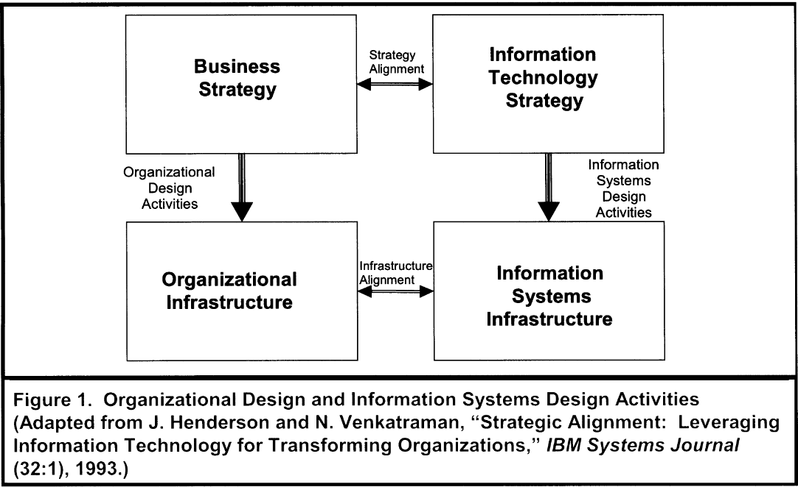
Figure 1. Organizational Design and Information Systems Design Activities (Hevner et al., 2004, p. 78)
📖 شکل ۱ — طراحی سازمانی و طراحی سیستمهای اطلاعاتی: این شکل از Henderson و Venkatraman (۱۹۹۳) اقتباس شده. چهار بخش دارد: استراتژی کسبوکار (بالا چپ)، استراتژی فناوری اطلاعات (بالا راست)، زیرساخت سازمانی (پایین چپ)، و زیرساخت سیستمهای اطلاعاتی (پایین راست). یعنی IS فقط فناوری نیست، بلکه همراستایی (alignment) بین استراتژی کسبوکار و استراتژی IT لازم است.
🇬🇧 Figure 1: Four boxes: Business Strategy (top-left), IT Strategy (top-right), Organizational Infrastructure (bottom-left), IS Infrastructure (bottom-right). Key idea: IS is not just technology. There must be alignment between business and IT strategy. This is Hevner's foundation: DSR must be both relevant and rigorous.
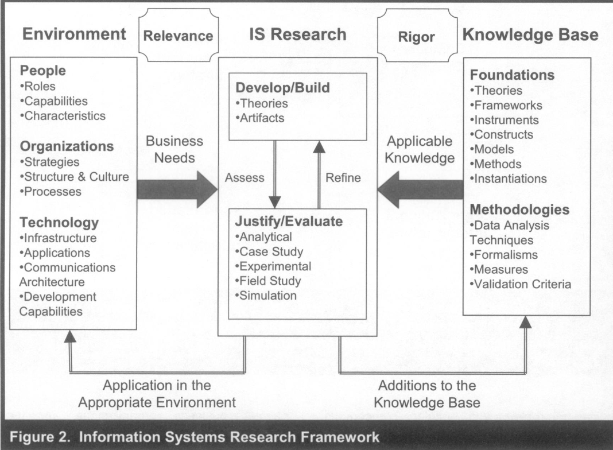
Table 1. Design-Science Research Guidelines (Hevner et al., 2004, p. 83)
📖 جدول ۱ — هفت راهنمای تحقیق علم طراحی: این مهمترین جدول پیپر است!
- راهنمای ۱: باید یک مصنوع قابلاستفاده تولید شود (سازه، مدل، متد، یا نمونه عملی).
- راهنمای ۲: باید یک مسئله مهم و واقعی را حل کند.
- راهنمای ۳: باید مفید، باکیفیت و مؤثر بودنش ثابت شود.
- راهنمای ۴: سهم مشخص در آرتیفکت، مبانی طراحی، یا روششناسی.
- راهنمای ۵: هم ساخت و هم ارزیابی با متدهای دقیق.
- راهنمای ۶: فرایند ابتکاری (heuristic) — تولید و آزمایش تکرار میشود.
- راهنمای ۷: هم برای مخاطبان فنی و هم مدیریتی قابلفهم باشد.
🇬🇧 Table 1: Most important table! Seven principles:
- G1: Must produce a usable artifact (construct, model, method, or instantiation).
- G2: Must solve an important, real business problem.
- G3: Must show it is useful, high quality, and effective.
- G4: Clear contributions in artifact, design foundations, or methodologies.
- G5: Rigorous methods in both building and evaluation.
- G6: Finding the right artifact is heuristic — a generate-and-test cycle.
- G7: Clear for both technical and management audiences.
⚠️ Not a mandatory checklist — principles requiring "creative skill and judgment."
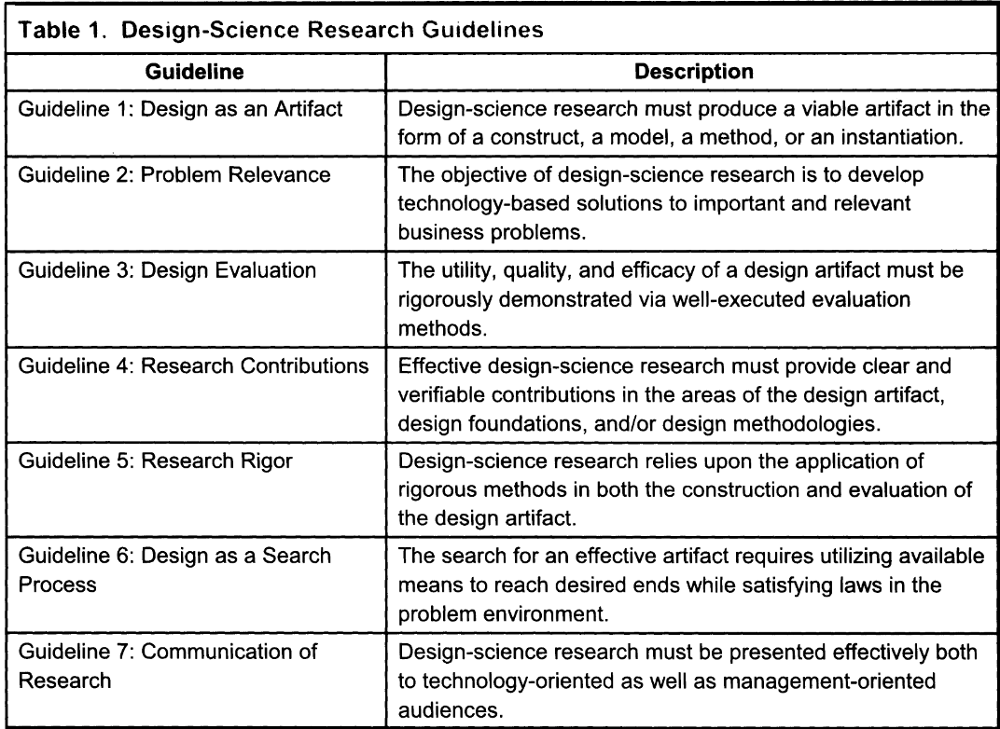
Table 2. Design Evaluation Methods (Hevner et al., 2004, p. 86)
📖 جدول ۲ — روشهای ارزیابی طراحی: پنج دسته:
- ۱. مشاهدهای: مطالعه موردی و مطالعه میدانی.
- ۲. تحلیلی: تحلیل ایستا، معماری، بهینهسازی، پویا.
- ۳. تجربی: آزمایش کنترلشده و شبیهسازی.
- ۴. تست: جعبه سیاه (عملکردی) و جعبه سفید (ساختاری).
- ۵. توصیفی: استدلال مستند و سناریوسازی.
انتخاب روش به نوع آرتیفکت بستگی دارد. الگوریتم → تست و شبیهسازی. Framework مفهومی → استدلال مستند و سناریو.
🇬🇧 Table 2: Five evaluation categories:
- 1. Observational: Case study, field study.
- 2. Analytical: Static, architecture, optimization, dynamic analysis.
- 3. Experimental: Controlled experiment, simulation.
- 4. Testing: Black box (functional), white box (structural).
- 5. Descriptive: Informed argument, scenarios.
Which to pick? Algorithm → testing/simulation. Conceptual framework → informed argument/scenarios.
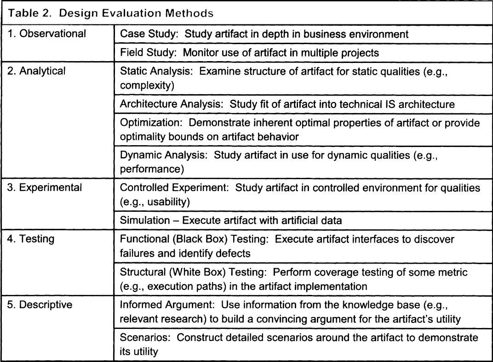
Figure 2. Information Systems Research Framework (Hevner et al., 2004, p. 80)
📖 شکل ۲ — چارچوب تحقیق IS: مهمترین شکل پیپر! سه ستون:
- چپ — محیط: افراد، سازمانها، فناوری. نیازهای کسبوکار از اینجا میآید → چرخه ارتباط (Relevance).
- وسط — تحقیق IS: ساخت (Build) + ارزیابی (Evaluate) با رفتوبرگشت بین آنها.
- راست — پایگاه دانش: نظریهها، چارچوبها، روششناسیها. دقت (Rigor) از اینجا میآید.
⚡ بدون ارتباط = بیفایده. بدون دقت = بیاعتبار.
🇬🇧 Figure 2: Most important figure! Three columns:
- Left — Environment: People, organizations, technology. Business needs come from here → Relevance Cycle.
- Center — IS Research: Develop/Build + Justify/Evaluate with back-and-forth iteration.
- Right — Knowledge Base: Theories, frameworks, methodologies. Rigor comes from here → Rigor Cycle.
⚡ Without relevance = useless. Without rigor = not credible.
🎯 Paper 2: Positioning and Presenting DSR for Maximum Impact
Gregor & Hevner (2013) — MIS Quarterly 37(2), 337-355
📝 Citation
Gregor, S. and Hevner, A. R. (2013). "Positioning And Presenting Design Science Research For Maximum Impact," MIS Quarterly, 37(2), pp. 337-355.
Presenters: Vamsi, Ali
📚 توضیح فارسی — کل پیپر گرگور و هِوِنر ۲۰۱۳ (خلاصه سریع)
🔴 مسئله اصلی: هِوِنر ۲۰۰۴ گفت «DSR تحقیق است» و ۷ راهنما برای آن تعیین کرد. ولی بعد از ده سال، خیلیها هنوز نمیدانستند چطور پیپر DSR بنویسند تا روی reviewer اثر بگذارد. مشکل بزرگ: محققان نمیدانستند artifact خودشان را کجا بگذارند، چطور ادعایشان را فریم کنند، چه ساختاری به پیپر بدهند. گرگور و هِوِنر ۲۰۱۳ دقیقاً این مشکل را حل میکنند.
🎯 دو نوع دانش (Knowledge Base):
- Ω (امگا) — دانش توصیفی (Descriptive): قوانین طبیعت. «دنیا چطور کار میکند؟» مثل: TAM میگوید perceived usefulness بر technology adoption اثر دارد. این دانش از مشاهده و تحقیق رفتاری (behavioral research) میآید.
- Λ (لامبدا) — دانش تجویزی (Prescriptive): مصنوعات ساخت بشر. «چطور چیز جدید بسازیم؟» مثل: یک الگوریتم، یک framework، یک اصل طراحی، یک پروتوتایپ. این دانش از طراحی و ساختن (design) میآید.
ارتباط بین دو دانش: DSR خوب هم Ω دارد هم Λ. یعنی وقتی یک artifact میسازی، باید بگویی این artifact بر اساس چه نظریه توصیفی (kernel theory) ساخته شده و چرا قرار است کار کند.
📊 ماتریس ۲×۲ سهم علمی (مهمترین بخش):
- Invention (اختراع): مشکل جدید + راهحل جدید. نادرترین نوع. مثال: اولین DSS (Scott-Morton, 1967). در مقالات MISQ ، هیچکدام Invention نبودند!
- Improvement (بهبود): مشکل شناختهشده + راهحل بهتر/جدید. رایجترین نوع DSR در IS. مثال: الگوریتم بهتر برای توصیه محصول.
- Exaptation (اقتباس): مشکل جدید + راهحل شناختهشده از حوزه دیگر. مثال: روشهای data warehouse را بیاوری برای healthcare (مثل CATCH).
- Routine Design (طراحی روتین): مشکل شناختهشده + راهحل شناختهشده. این تحقیق نیست! این کار مهندسی است.
⚠️ نکته مهم برای ارائه: وقتی از تو بپرسند یک پیپر DSR کجای این ماتریس است، باید بتوانی توضیح بدهی چرا مشکل جدید است یا نیست و چرا راهحل جدید است یا نیست.
📐 سه سطح انتزاع (Levels of Abstraction):
- سطح ۱ — Situated Implementation: یک سیستم واقعی ساختی. پروتوتایپ، نرمافزار، instantiation. خیلی concrete و خاص یک context. مثال: یک اپ موبایل برای مدیریت دارو.
- سطح ۲ — Nascent Design Theory: از آن سیستم اصول طراحی استخراج کردی. دیگر خاص یک context نیست، بلکه قابل تعمیمتر است. مثال: «سیستمهای سلامت هوشمند باید X و Y ویژگی داشته باشند.» این همان جایی است که Grisold et al. هستند.
- سطح ۳ — Well-Developed Design Theory: یک تئوری طراحی کامل با قدرت توضیحی و پیشبینی. خیلی نادر است.
قانون طلایی: هرچه انتزاعیتر = تأثیرگذارتر. سطح ۱ به تنهایی ضعیفترین سهم علمی است. اگر میخواهی پیپرت اثر داشته باشد، از سطح ۱ به سطح ۲ حرکت کن.
📝 ساختار ۷ بخشی پیپر (Publication Schema):
- ۱. مقدمه: مشکل چیست؟ چرا مهم است؟ artifact خودت چیست؟ اینجا باید صریحاً بگویی contribution از چه نوعی است (Invention/Improvement/Exaptation).
- ۲. مرور ادبیات: چه نظریهها و artifactهایی قبلاً وجود دارد؟
- ۳. روش: از چه روش DSR استفاده کردی؟ (Hevner 2004 یا Peffers 2007)
- ۴. توضیح artifact: بزرگترین بخش پیپر! artifact خودت را کامل توضیح بده.
- ۵. ارزیابی: چطور نشان دادی artifact کار میکند؟ (آزمایش، مطالعه موردی، سناریو)
- ۶. بحث: artifact تو چه سهمی در دانش دارد؟
- ۷. نتیجهگیری.
📣 سیگنالدهی (Signaling): نویسنده DSR باید در مقدمه صریحاً بگوید سهم علمیاش چیست. مثال: «This study offers an improvement to...» یا «We contribute a nascent design theory (Level 2).» این به reviewer کمک میکند بفهمد چه نوع ادعایی را ارزیابی میکند. اگر سیگنال ندهی، reviewer ممکن است ادعای تو را اشتباه تفسیر کند.
🔗 ارتباط با تحقیق من: وقتی در آینده خودم پیپر DSR برای trust-delegation framework بنویسم، باید از این ماتریس و سطوح استفاده کنم. احتمالاً کار من Improvement یا Exaptation است (مشکل جدید: agentic AI delegation + راهحل مبتنی بر نظریههای موجود trust). و باید هدفم سطح ۲ باشد: design principles استخراج کنم، نه فقط یک سیستم بسازم.
📊 DSR Knowledge Contribution Framework (Figure 3)
| Low Application Domain Maturity (New problem) |
High Application Domain Maturity (Known problem) |
|
|---|---|---|
| High Solution Maturity (Known solution) |
Exaptation Extend known solutions to new problems. Example: Data warehouse methods → healthcare (CATCH) |
Routine Design Known solutions for known problems. Not research — professional practice. |
| Low Solution Maturity (New solution) |
Invention New solutions for new problems. Radical innovation. Example: First DSS (Scott-Morton, 1967) |
Improvement New/better solutions for known problems. Most common DSR type in IS. |
📐 Three Levels of DSR Contribution (Table 1)
| Level | Type | Examples | Abstraction |
|---|---|---|---|
| Level 1 | Situated Implementation | Software products, implemented processes, prototypes | Most concrete |
| Level 2 | Nascent Design Theory | Operational principles, architectures, constructs, design principles, methods | Middle |
| Level 3 | Well-Developed Design Theory | Mid-range and grand theories about embedded phenomena | Most abstract |
💡 Key Insight
To have lasting impact, researchers should aim to move beyond Level 1 (just building a system) toward Level 2 or 3 (extracting design principles or theory). Abstraction = Impact.
📝 Recommended DSR Paper Structure (Table 3)
| # | Section | What to Include |
|---|---|---|
| 1 | Introduction | Define the problem, significance, and specify artifact goals. |
| 2 | Literature Review | Survey prior design theory/knowledge and existing artifacts. |
| 3 | Method | State the DSR approach (Hevner 2004 or Peffers 2007). |
| 4 | Artifact Description | The major part of the paper. Describe the artifact at appropriate abstraction. |
| 5 | Evaluation | Evidence of validity, utility, quality, and efficacy. |
| 6 | Discussion | Link back to Introduction's objectives. Highlight significance. |
| 7 | Conclusions | Restate main findings and contribution. |
📷 شکلهای اصلی مقاله — Original Paper Figures
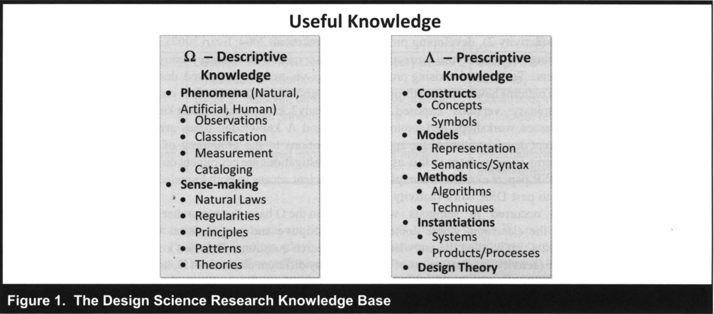
Figure 1. The Design Science Research Knowledge Base (Gregor & Hevner, 2013, p. 344)
📖 شکل ۱ — پایگاه دانش: این شکل دو نوع دانش را نشان میدهد. سمت چپ دانش توصیفی (پدیدهها، قوانین، الگوها) و سمت راست دانش تجویزی (سازهها، مدلها، متدها، و نظریه طراحی).
🗣️ How I would explain Figure 1: So this figure splits knowledge into two types. On the left you have Omega (Ω) — descriptive knowledge. That is what we already know about how the world works. Like TAM tells us perceived usefulness matters. On the right you have Lambda (Λ) — prescriptive knowledge. That is stuff we build — constructs, models, methods, design theories. The point is: when you do DSR, you are creating Lambda. But your Lambda should be based on Omega. You need a reason why your artifact should work, not just "I built it and it seems fine."
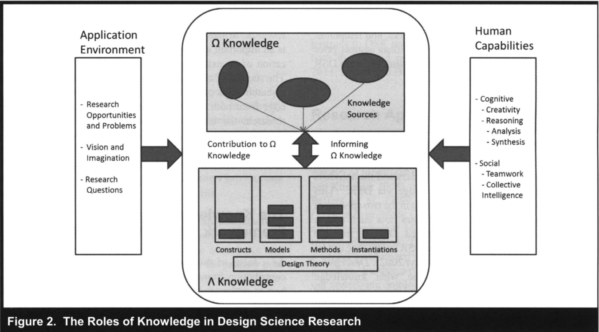
Figure 2. The Roles of Knowledge in Design Science Research (Gregor & Hevner, 2013, p. 344)
📖 شکل ۲ — نقش دانش: سه بخش: سمت چپ محیط کاربردی (مشکلات و فرصتها)، وسط پایگاه دانش، و سمت راست تواناییهای انسانی. دانش توصیفی به تجویزی اطلاعات میدهد و بالعکس.
🗣️ How I would explain Figure 2: Three columns. Left side is the real world — the problems and opportunities we are trying to address. Middle is the knowledge base where Omega and Lambda sit together and inform each other. Right side is us, the researchers — our creativity, experience, judgment. So the idea is: problems come from the real world, we use existing knowledge plus our own skills to build new artifacts, and those artifacts add back to the knowledge base.
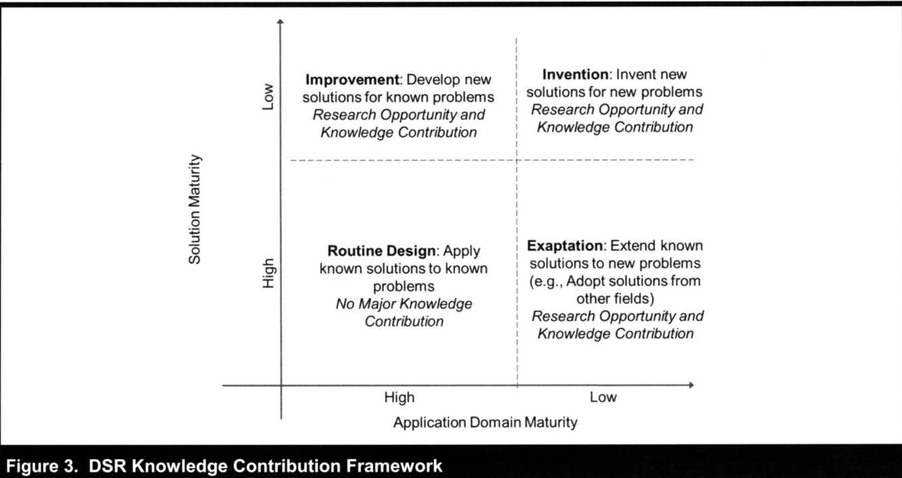
Figure 3. DSR Knowledge Contribution Framework (Gregor & Hevner, 2013, p. 345)
📖 شکل ۳ — ماتریس ۲×۲ سهم علمی: این مهمترین شکل پیپر است! چهار خانه:
- مشکل جدید + راهحل جدید = اختراع
- مشکل قدیمی + راهحل جدید = بهبود (رایجترین نوع)
- مشکل جدید + راهحل قدیمی = اقتباس
- مشکل قدیمی + راهحل قدیمی = طراحی روتین (تحقیق نیست)
🗣️ How I would explain Figure 3: This is the most important figure in the whole paper. It is a 2×2 matrix. X-axis is how mature the problem is. Y-axis is how mature the solution is. Four boxes:
- Invention: Nobody studied this problem before, and nobody built this kind of solution before. Very rare. Like the first decision support system ever.
- Improvement: We know the problem, but we have a better way to solve it. This is where most DSR papers live.
- Exaptation: New problem, but we take a solution that already works somewhere else and apply it here. Like taking data warehouse methods and using them for healthcare.
- Routine Design: Known problem, known solution. That is just engineering. Not research.
When the professor asks "where does this paper fit?", you need to say why the problem is new or not, and why the solution is new or not.
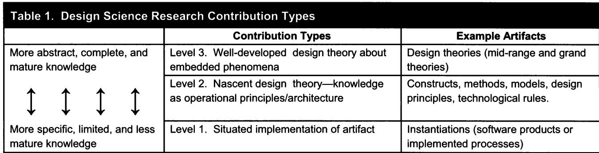
Table 1. Design Science Research Contribution Types (Gregor & Hevner, 2013, p. 342)
📖 جدول ۱ — سه سطح سهم علمی: هرچه بالاتر = انتزاعیتر و تأثیرگذارتر.
- سطح ۱ = سیستم واقعی (پروتوتایپ)
- سطح ۲ = اصول طراحی (نظریه نوپا)
- سطح ۳ = نظریه طراحی کامل
🗣️ How I would explain Table 1: Three levels of how abstract your contribution is. Higher level = bigger impact.
- Level 1: You just built something. A prototype, a system. It works in one specific place. That is the weakest contribution by itself.
- Level 2: You extracted design principles from what you built. Now other people can use your principles in different contexts. This is where most good DSR papers try to be. Grisold et al. is here.
- Level 3: Full design theory. Very rare. Almost nobody gets here.
The takeaway: if you only build a system and stop there, your contribution is weak. You need to go from "I built it" to "here is why it works and here are the principles others can follow."
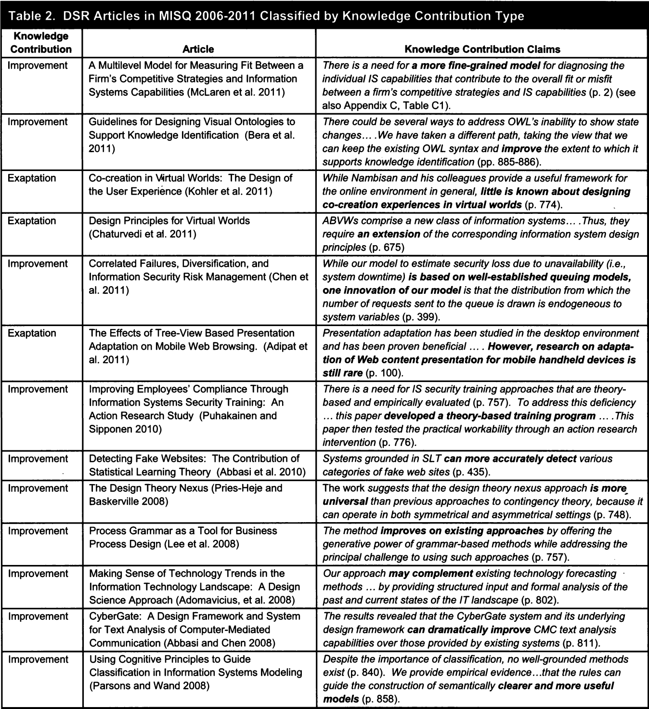
Table 2. DSR Articles in MISQ 2006-2011 Classified by Knowledge Contribution Type (Gregor & Hevner, 2013, p. 348)
📖 جدول ۲: اکثراً بهبود هستند. چند مورد اقتباس. هیچکدام اختراع نیست (اختراع نادر است).
🗣️ How I would explain Table 2: The authors looked at MISQ papers from 2006 to 2011 and classified them. Most of them were Improvement — known problem, better solution. A few were Exaptation. And zero were Invention. So if someone claims Invention, that is a big claim and you should check carefully whether it is really new on both axes.
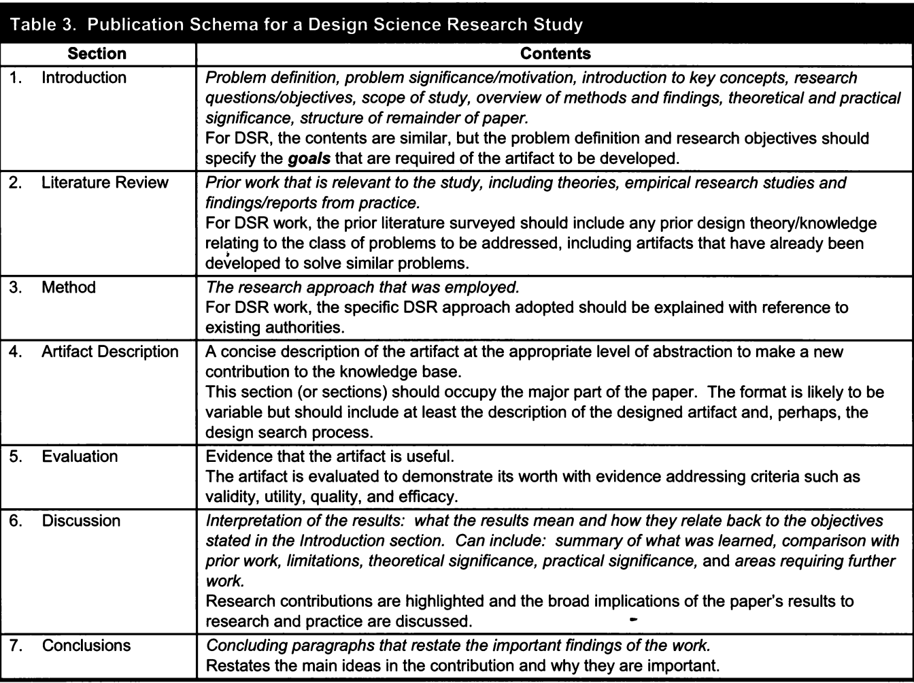
Table 3. Publication Schema for a Design Science Research Study (Gregor & Hevner, 2013, p. 350)
📖 جدول ۳: ۷ بخش. بخش چهارم (توضیح آرتیفکت) بزرگترین بخش پیپر است.
🗣️ How I would explain Table 3: This is the recommended structure for writing a DSR paper. Seven sections: Introduction, Literature Review, Method, Artifact Description, Evaluation, Discussion, Conclusions. The biggest section should be Section 4 — describing your artifact. And the key rule: in your Introduction, you must tell the reader upfront what kind of contribution you are making. Say "this is an Improvement" or "this is Exaptation at Level 2." If you do not signal, the reviewer does not know what standard to judge you by.
📣 Signaling Your Contribution
The paper emphasizes that DSR authors must explicitly signal their contribution type in the Introduction. Example: "This study offers an improvement to existing approaches by..." Reviewers need to know upfront what type of claim they are evaluating.
📚 Paper 3: Genres of Inquiry in Design-Science Research
Baskerville, Kaul & Storey (2015) — MIS Quarterly 39(3), 541-564
📝 Citation
Baskerville, R., Kaul, M., and Storey, V.C. (2015). "Genres of Inquiry in Design-Science Research: Justification and Evaluation of Knowledge Production," MIS Quarterly, 39(3), pp. 541-564.
Presenter: Kim
📚 توضیح فارسی — ژانرهای پژوهش DSR
🔴 مسئله: بسکرویل و همکارانش میگویند DSR یک "آشفتهبازار روششناسی" (methodological hodgepodge) است. چرا؟ چون در یک پروژه DSR ممکن است هم طراحی کنی، هم مطالعه موردی انجام بدهی، هم تحلیل علمی کنی. مشکل اینجاست: با کدام معیار هر بخش را ارزیابی کنیم؟
🎯 راهحل: مفهوم "ژانر پژوهش" (Genre of Inquiry). هر ژانر معیارهای خاص خودش را دارد. وقتی در لحظهای از پروژه هستی که داری "طراحی" میکنی، معیار ارزیابی متفاوت است با وقتی که داری "آزمایش علمی" میکنی. این اسمش "لحظه دانشی" (Knowledge Moment) است.
⚡ نکته کلیدی: یک پروژه DSR چند ژانر را طی میکند. باید مشخص کنی الان در کدام ژانر هستی تا reviewer معیار اشتباهی برای ارزیابی به کار نبرد.
⚖️ Two Dualities of DSR
| Duality | Pole 1 | Pole 2 |
|---|---|---|
| Knowledge Goals | Design — synthesis, utility, making things work | Science — analysis, truth, understanding why |
| Knowledge Scope | Nomothetic — general laws, abstract theories | Idiographic — specific, unique, concrete contexts |
📊 The Genre Framework (Figure 1)
| Design (Synthesis/Utility) | Science (Analysis/Truth) | |
|---|---|---|
| Nomothetic (General) |
Genre ND — Nomothetic Design General design principles, meta-requirements, meta-designs. Output: design principles, design theories |
Genre NS — Nomothetic Science General theories about how artifacts interact with environments. Output: formal models, explanatory theories |
| Idiographic (Specific) |
Genre ID — Idiographic Design Designing a specific, material artifact for a unique problem. Output: a working system, prototype |
Genre IS — Idiographic Science Specific insights from implementing an artifact in a particular setting. Output: case insights, contextual findings |
🔍 Justification vs. Evaluation
| Concept | Definition | Timing |
|---|---|---|
| Justification | The logic and arguments — grounds for belief. Why this theoretical grounding makes sense. | Before / during the process |
| Evaluation | The empirical evidence — quality and performance of the final product. | After building the artifact |
💡 Illustrative Examples
- CyberGate (Abbasi & Chen, 2008): Text analysis for computer-mediated communication. Moved from meta-requirements (Genre ND) → building the system (Genre ID) → testing on Enron email database (Genre IS).
- Viability Engineering Method (VEM): Modeling language for information flows. Created meta-models (ND) → applied in banking/healthcare (ID) → generalized scientific knowledge (NS).
Key takeaway: A single DSR project moves through multiple genres as different "knowledge moments."
✅ Paper 4: Validity in Design Science
Larsen, Lukyanenko, Storey, Parsons, VanderMeer & Hovorka (2025) — MIS Quarterly 49(4), 1267-1294
📝 Citation
Larsen, K. R., Lukyanenko, R., C. Storey, V., Parsons, J., VanderMeer, D., & Hovorka, D. S. (2025). "Validity in Design Science," MIS Quarterly, 49(4), pp. 1267-1294.
Presenter: Rayna
📚 توضیح فارسی — اعتبار در DSR
🔴 مسئله: در پژوهش رفتاری، ما میدانیم validity چیست (construct validity, internal validity, و غیره). اما در DSR، وقتی یک آرتیفکت میسازیم، چه چیزی را باید valid کنیم؟ و با چه معیاری؟ این پیپر یک چارچوب مشخص ارائه میدهد.
🎯 ایده اصلی: بجای اینکه validity فقط در آخر کار بیاید (ارزیابی نهایی)، باید از ابتدای طراحی به validity فکر کنیم. سه نوع ادعای دانشی وجود دارد:
- Criterion Claim: «آیا بهتر است؟» — مقایسه با یک استاندارد.
- Causal Claim: «چطور کار میکند؟» — کدام قسمت طراحی باعث عملکرد شد.
- Context Claim: «کجا کار میکند؟» — در چه شرایطی قابل تعمیم است.
📊 Design Science Validity Framework (DSVF)
| Knowledge Claim | Key Question | Validity Types |
|---|---|---|
| Criterion Claims | "Is it better?" | Criterion Efficacy (vs. standard), Predictive (future data), Concurrent (current data), Criterion Characteristic (vs. reference features) |
| Causal Claims | "How does it work?" | Causal Efficacy (impact of specific part on performance), Causal Characteristic (impact on features) |
| Context Claims | "Where does it work?" | External Validity (across multiple systems), Ecological Validity (real-world sociotechnical systems) |
⚖️ DSR Validity vs. Behavioral Research Validity
| Dimension | Behavioral Research | Design Science |
|---|---|---|
| Focus | Research process (sampling, measurement) | Knowledge claims about the artifact |
| Compared to | Theoretical expectations | A reference entity (human, gold-standard artifact, ideal theory) |
| When | During statistical analysis | From the start of design through final evaluation |
💡 Recommendations for Researchers
- Be explicit about claims: Clearly state if you are making a criterion, causal, or context claim.
- Select appropriate reference entities: Be transparent about what you compare your artifact to.
- Use the taxonomy labels: Use terms like "criterion efficacy validity" to improve reporting clarity.
- Adopt a process view: Plan for validity from the start, not just as a final evaluation step.
🤖 Paper 5: Guardrails for Human-AI Ecologies
Grisold, Berente & Seidel (2025) — MIS Quarterly 49(4), 1239-1266
📝 Citation
Grisold, T., Berente, N., & Seidel, S. (2025). "Guardrails for Human-AI Ecologies: Norm-Based Coordination and Design for Predictability," MIS Quarterly, 49(4), pp. 1239-1266.
Presenters: Ali, Dante, Vamsi
📚 توضیح فارسی — کل پیپر گریسولد ۲۰۲۵ (خلاصه سریع برای مطالعه)
🔴 مسئله اصلی: وقتی AI خیلی خودمختار (agentic) میشود، یعنی خودش یاد میگیرد، تصمیم میگیرد، و عمل میکند، دیگر نمیتوانیم با «قوانین سخت» (hard-coded rules) کنترلش کنیم. چرا؟ چون رفتارش غیرقابل پیشبینی میشود. مثلاً یک ربات در انبار ممکن است مسیر جدیدی یاد بگیرد که ما پیشبینی نکرده بودیم. این پیپر میگوید: به جای قوانین سخت، از هنجارهای اجتماعی (social norms) استفاده کنیم تا انعطاف داشته باشیم ولی همزمان یک چارچوب رفتاری حفظ شود.
🎯 مفهوم کلیدی — اکولوژی انسان-AI: محیطی که انسانها و عاملهای AI با هم تعامل دارند و باید هماهنگ شوند. مثل یک انبار هوشمند که رباتها، درونها و انسانها با هم کار میکنند. تفاوت با سیستمهای قدیمی: اینجا AI فقط ابزار نیست، عامل (agent) است. تصمیم میگیرد، یاد میگیرد، و حتی ممکن است اشتباه کند.
📖 دو نظریه پایه (Kernel Theories):
- ۱. نظریه پردازش پیشبینانه (Predictive Processing Theory): هر عامل (انسان یا AI) یک «ماشین پیشبینی» است. بر اساس مدل درونیاش پیشبینی میکند چه اتفاقی خواهد افتاد → عمل میکند → ورودی حسی میگیرد → اگر ورودی با پیشبینی مطابقت نداشت، خطای پیشبینی (prediction error) رخ میدهد → مدل درونیاش را بهروز میکند. این چرخه دائمی است.
- ۲. نظریه هنجارهای اجتماعی (Social Norm Theory): جوامع بدون اینکه یک رئیس مرکزی داشته باشند، از طریق هنجارهای مشترک هماهنگ میشوند. مثلاً وقتی وارد آسانسور میشوی، بدون هیچ قانونی میدانی باید ساکت باشی. این هنجارها انتظارات مشترک ایجاد میکنند.
📖 دو نوع هنجار (مهم!):
- هنجارهای عمیق (Deep Norms): ارزشهای اصلی و ثابت. مثل «حفاظت از ایمنی انسان»، «عدالت»، «کارایی». اینها گاردریلها هستند. مثل خطکشیهای کنار جاده: جهت کلی رفتار را مشخص میکنند ولی مسیر دقیق را نه.
- هنجارهای سطحی (Surface Norms): قوانین عملی و انعطافپذیر که بر اساس شرایط تغییر میکنند. مثل «در تقاطع، ابتدا ربات رد میشود» یا «وقتی انبار شلوغ است، درونها مسیر بالایی را بروند». اینها قابل تغییر و قابل تولید هستند.
رابطه بین دو نوع: هنجارهای عمیق، هنجارهای سطحی را محدود میکنند. یعنی هر هنجار سطحی باید درون «منطقه رفتار مطلوب» (zone of desirable behavior) هنجار عمیق باشد. اگر یک هنجار سطحی از این منطقه خارج شود (مثلاً سرعت خیلی بالای ربات) → هنجار عمیق (ایمنی) نقض شده و مدیر باید مداخله کند.
📐 چهار اصل طراحی (Artifact اصلی پیپر):
- DP1 — طراحی برای هنجارهای مشترک: هنجارهای عمیق (ارزشهای اصلی) را در سیستم encode کن. دو زیراصل: DP1.1 = deep norm encoding (ارزشها را تعریف کن) و DP1.2 = surface norm enactment (هنجارهای سطحی را بر اساس عمیق بساز). مثال: مدیر انبار تعیین میکند «ایمنی مهمترین ارزش است» → سیستم بر اساس آن قوانین عملی تولید میکند.
- DP2 — طراحی برای مداخله انسانی: مدیر باید بتواند نتایج را رصد کند و وقتی مشکلی پیش آمد، مداخله کند. DP2.1 = deep norm evolution (هنجارهای عمیق را در طول زمان تکامل بده) و DP2.2 = deep norm reinforcement (هنجارهای سطحی موفق را به هنجار عمیق تبدیل کن). مثال: مدیر میبیند «قانون یکطرفه شدن راهرو» خوب کار کرده → آن را به هنجار عمیق تبدیل میکند.
- DP3 — طراحی برای پیشبینیپذیری (سیگنالها): عاملان باید بتوانند قصد خود را سیگنال بدهند و قصد دیگران را استنباط کنند. DP3.1 = norm-enactment communication (عامل سیگنال میدهد: «من دارم از هنجار X پیروی میکنم»). DP3.2 = norm-enactment inference (عامل از رفتار دیگری حدس میزند از چه هنجاری پیروی میکند). مثال: ربات چراغاش را روشن میکند تا نشان بدهد دارد از مسیر A میرود → انسان میفهمد و از مسیر B میرود.
- DP4 — طراحی برای پیشبینیپذیری (اجرا): چهار زیراصل: DP4.1 = surface norm defaulting (وقتی عدمقطعیت کم است، از هنجار سطحی پیشفرض استفاده کن). DP4.2 = surface norm adjustment (وقتی عدمقطعیت متوسط است، هنجار سطحی را تعدیل کن). DP4.3 = surface norm generation (وقتی عدمقطعیت زیاد است و هنجار سطحی مناسبی وجود ندارد، یک هنجار سطحی جدید تولید کن). DP4.4 = surface norm reinforcing (هنجارهای سطحی موفق را تقویت کن). مثال: ربات وارد منطقه جدید میشود که قبلاً ندیده، هنجار سطحی مناسبی ندارد → یک قانون جدید حرکتی تولید میکند → اگر خوب کار کرد، تقویت میشود.
📊 جایگاه DSR این پیپر (بر اساس Gregor & Hevner 2013):
- نوع سهم: Invention (مشکل جدید: هماهنگی با AI خودمختار + راهحل جدید: هنجارهای اجتماعی). ادعای نویسندگان ص. ۱۲۶۰.
- سطح: Level 2 (Nascent Design Theory) — design principles. نه پروتوتایپ ساختند، نه تست واقعی.
- نوع تئوری: Type V از Gregor (2006) — Theory for Design and Action.
- Ω (دانش توصیفی): Predictive Processing Theory + Social Norm Theory.
- Λ (دانش تجویزی): ۴ اصل طراحی با ۱۰ زیراصل.
⚠️ نقطه ضعف پیپر (مهم برای بحث کلاسی): ارزیابی (evaluation) ضعیفترین بخش است. فقط از یک سناریوی تشریحی (illustrative scenario) در انبار استفاده کردند. هیچ پروتوتایپ، هیچ آزمایش، هیچ مطالعه موردی واقعی نیست. فقط «تصور کنید در یک انبار...» خودشان هم این محدودیت را قبول دارند و میگویند آینده باید implementation واقعی ساخته شود.
🔗 ارتباط با تحقیق من: این پیپر مستقیماً به agentic IS و trust-delegation مربوط است. وقتی AI خودمختار میشود، به جای کنترل مستقیم، باید «guardrails» بگذاریم. این خیلی شبیه مفهوم delegation rights در تحقیق خودم است: به جای اینکه همه چیز را کنترل کنی، حق تصمیمگیری را با محدودیتهایی delegate میکنی. deep norms = trust boundaries من. surface norms = operational delegation rules.
🎤 سؤالات احتمالی در کلاس:
- آیا واقعاً AI میتواند هنجار اجتماعی را «بفهمد»؟ (پاسخ: نه لزوماً «فهم» به معنای انسانی، بلکه encode شدن در رفتار)
- فرق guardrails با hard rules چیست؟ (پاسخ: guardrails مرز تعیین میکنند ولی درون مرز آزادی عمل هست، hard rules مسیر دقیق تعیین میکنند)
- چرا Invention ادعا کردند؟ آیا multi-agent coordination قبلاً در CS بوده؟ (پاسخ: بله ولی در IS و sociotechnical context جدید است)
🔑 Key Concepts
| Concept | Definition |
|---|---|
| Human-AI Ecology | Sociotechnical environment where human and AI agents coordinate via shared norms in a shared environment. |
| Guardrails | Zones of desirable behavior established by deep norms. They define boundaries, not exact paths. |
| Deep Norms | Abstract, persistent social rules (safety, efficiency, fairness). These set the guardrails. |
| Surface Norms | Concrete, flexible rules agents use to adjust to changing situations. |
| Predictive Processing Theory (PPT) | Agents (human and AI) are "prediction machines" using top-down models to predict bottom-up sensory input. |
📐 Four Design Principles (The DSR Artifact)
| DP | Name | Description |
|---|---|---|
| DP1 | Design for Shared Norms | Encode deep norms for core values (safety, fairness) into the ecology. |
| DP2 | Design for Human Intervention | Monitor outcomes. Reinforce successful surface norms into deep norms over time. |
| DP3 | Design for Predictability (Signals) | Agents must signal their intent (norm-enactment communication) and infer others' intent (norm-enactment inference). |
| DP4 | Design for Predictability (Enacting) | Default to known surface norms or generate new ones in high-uncertainty scenarios. |
📊 How This Paper is Positioned as DSR
- Artifact type: Design Theory (Theory of Design and Action — Gregor's Type V)
- Kernel theories: Predictive Processing Theory + Social Norm Theory
- Contribution type (Gregor & Hevner 2013): Invention — new solution (norm-based coordination) for a new problem (human-AI ecology coordination)
- Level (Gregor & Hevner 2013): Level 2 — Nascent Design Theory (design principles)
- Evaluation: Illustrative scenario — autonomous warehouse ecology (humans, drones, robots)
🔄 Coordination Through Norms (Conceptual Flow)
(Safety, Fairness, Efficiency)"] --> GR["GUARDRAILS
Zones of Desirable Behavior"] GR --> SN["Surface Norms
(Specific rules for situations)"] SN --> A1["Agent 1 (Human)
Predicts Agent 2's behavior"] SN --> A2["Agent 2 (AI)
Predicts Agent 1's behavior"] A1 --> |"Signals intent"| A2 A2 --> |"Signals intent"| A1 A1 --> O["Outcomes"] A2 --> O O --> |"Human monitors
DP2"| DN
📷 شکلهای اصلی مقاله — Original Paper Figures
📖 شکل ۱ — ترکیب ادبیات: این شکل نشان میدهد چطور دو حوزه تعامل انسان-کامپیوتر و سیستمهای چندعاملی ترکیب شدهاند. از اولی: هماهنگی = پردازش اطلاعات + عدمقطعیت. از دومی: هماهنگی قابل پیشتعریف کامل نیست + هنجارها لازم هستند.
HCI (Human Computer Interaction) + MAS (Multi-Agent Systems) → Coordination in Human-AI Ecologies
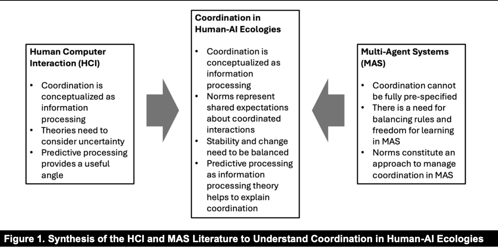
Figure 1. Synthesis of the HCI and MAS Literature to Understand Coordination in Human-AI Ecologies (Grisold et al., 2025)
📖 شکل ۲ — مکانیزم پردازش پیشبینانه: بنیاد نظری اصلی پیپر. عامل بر اساس مدل درونیاش پیشبینی میکند، عمل میکند، ورودی حسی میگیرد، و اگر تفاوتی باشد خطای پیشبینی رخ میدهد.
(a) Competing predictions → (b) Agent acts → (c) Sensory input → (d) Prediction errors
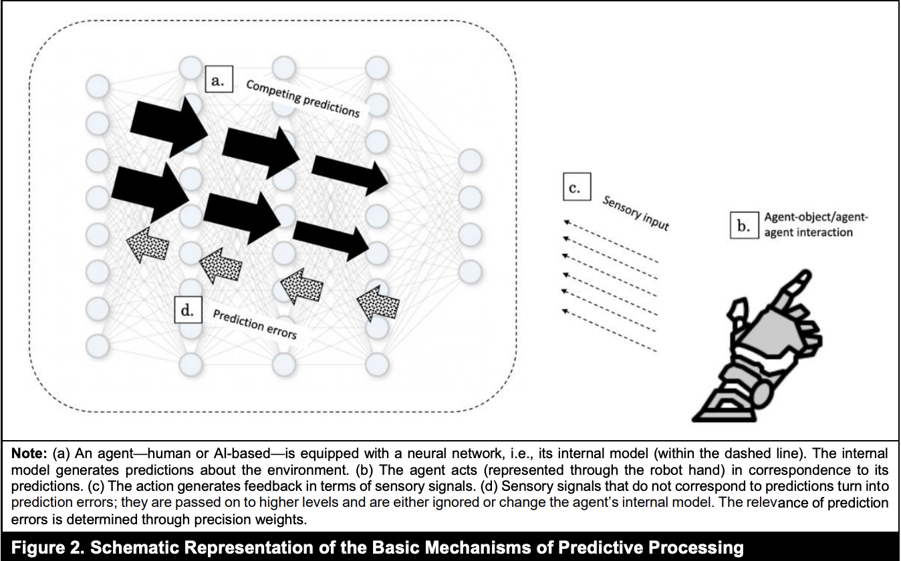
Figure 2. Schematic Representation of the Basic Mechanisms of Predictive Processing (Grisold et al., 2025)
📖 شکل ۳ — رابطه هنجارهای عمیق و سطحی: هنجار عمیق = «حفاظت از سلامت». هنجار سطحی مطلوب = «روشهای جدید سلام» برای جلوگیری از انتقال ویروس. هنجار سطحی نامطلوب = «انتشار اطلاعات نادرست». اگر نامطلوب تکرار شود، هنجار عمیق آسیب میبیند.
(a) Deep norm → desirable surface norm | (b) Deep norm → problematic surface norm | (c) Problematic → damages deep norm
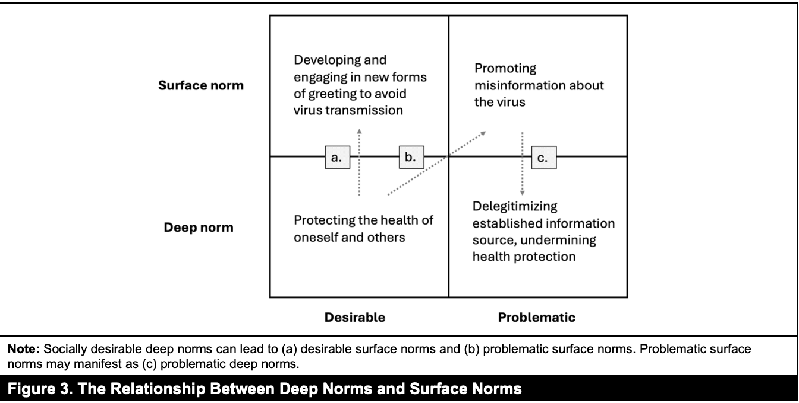
Figure 3. The Relationship Between Deep Norms and Surface Norms (Grisold et al., 2025)
📖 شکل ۴ — ساختار سهلایهای: شکل کلیدی برای ارائه! پایین = هنجارهای عمیق (ثابت/پایدار). وسط = هنجارهای سطحی (خاصتر). بالا = تعاملات هماهنگ (عملی). فلشها نشاندهنده جریان از عمیق به سطحی و سپس به تعامل، و بازخورد خطاهای پیشبینی هستند.
Bottom: Deep norms (stable) → Middle: Surface norms (specific) → Top: Coordinated interactions (actual) | ⚡ = prediction errors
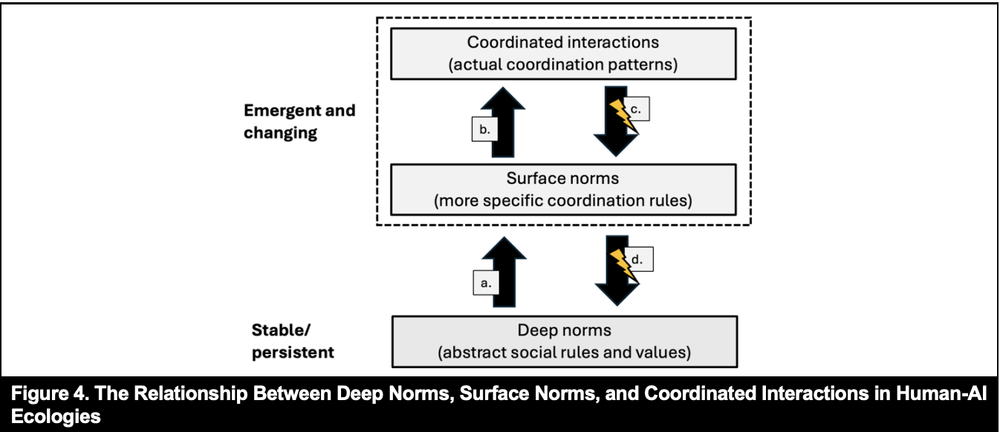
Figure 4. The Relationship Between Deep Norms, Surface Norms, and Coordinated Interactions in Human-AI Ecologies (Grisold et al., 2025)
📖 جدول ۱ — نقشها: سه نقش:
- مدیران: ارزشها و قوانین اصلی تعیین میکنند
- توسعهدهندگان: اکولوژی را میسازند و تغییر میدهند
- عاملان: انسان یا هوش مصنوعی — در اکولوژی عمل میکنند
Managers (values/rules) · Developers (build/modify) · Agents (human or AI, act in ecology)
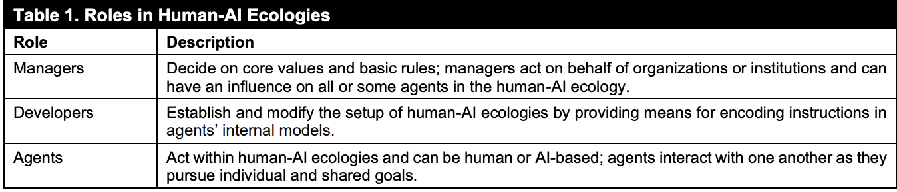
Table 1. Roles in Human-AI Ecologies (Grisold et al., 2025)
📖 جدول ۲ — مفاهیم کلیدی: تعریف دقیق هر مفهوم از پیپر. این جدول نظریه پردازش پیشبینانه و نظریه هنجارها را ترکیب میکند.
Deep norm · Surface norm · Coordinated interaction · Expected precision · Contextual cue · Low/High-uncertainty scenarios
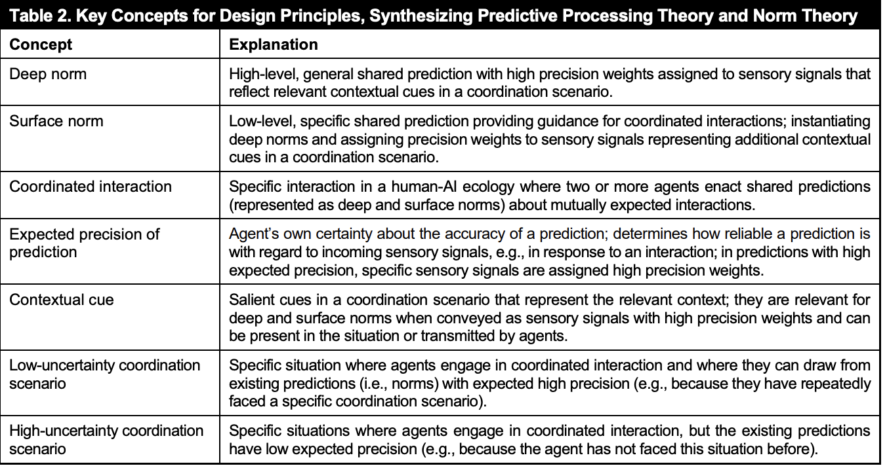
Table 2. Key Concepts for Design Principles, Synthesizing Predictive Processing Theory and Norm Theory (Grisold et al., 2025)
📖 جدول ۳ — اصول طراحی ۱ و ۲ (جزئیات): اصل اول درباره هنجارهای مشترک و اصل دوم درباره مداخله انسانی. هر ستون پنج بخش دارد: اصل، زیراصل، مکانیزم، نقشها، و نتیجه.
DP1 = Shared Norms (DP1.1 + DP1.2) | DP2 = Human Intervention (DP2.1 + DP2.2) | Columns: Principle → Subprinciple → Mechanism → Roles → Outcome
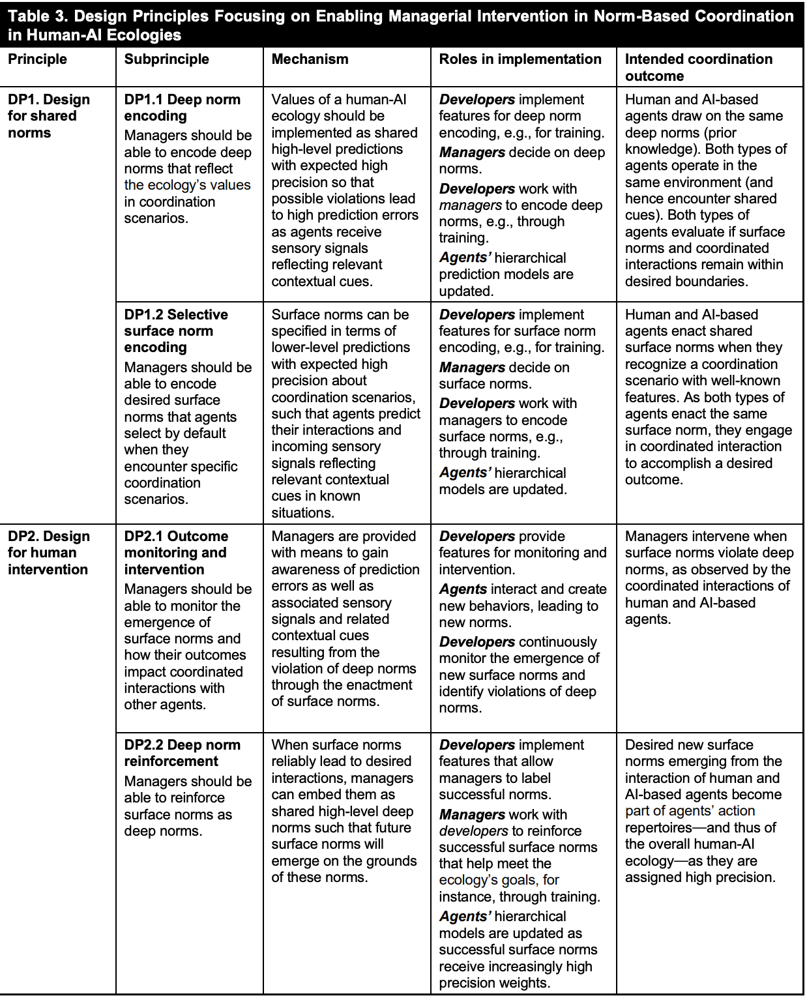
Table 3. Design Principles Focusing on Enabling Managerial Intervention (DP1 & DP2) (Grisold et al., 2025)
📖 جدول ۴ — اصول طراحی ۳ و ۴ (جزئیات): اصل سوم درباره پیشبینیپذیری از طریق سیگنالها و اصل چهارم درباره پیشبینیپذیری از طریق اجرای هنجارها. اصل چهارم چهار زیراصل دارد.
DP3 = Predictability (Signals): DP3.1 norm-enactment communication + DP3.2 norm-enactment inference | DP4 = Predictability (Enacting): DP4.1 surface norm defaulting + DP4.2 surface norm adjustment + DP4.3 surface norm generation + DP4.4 surface norm reinforcing
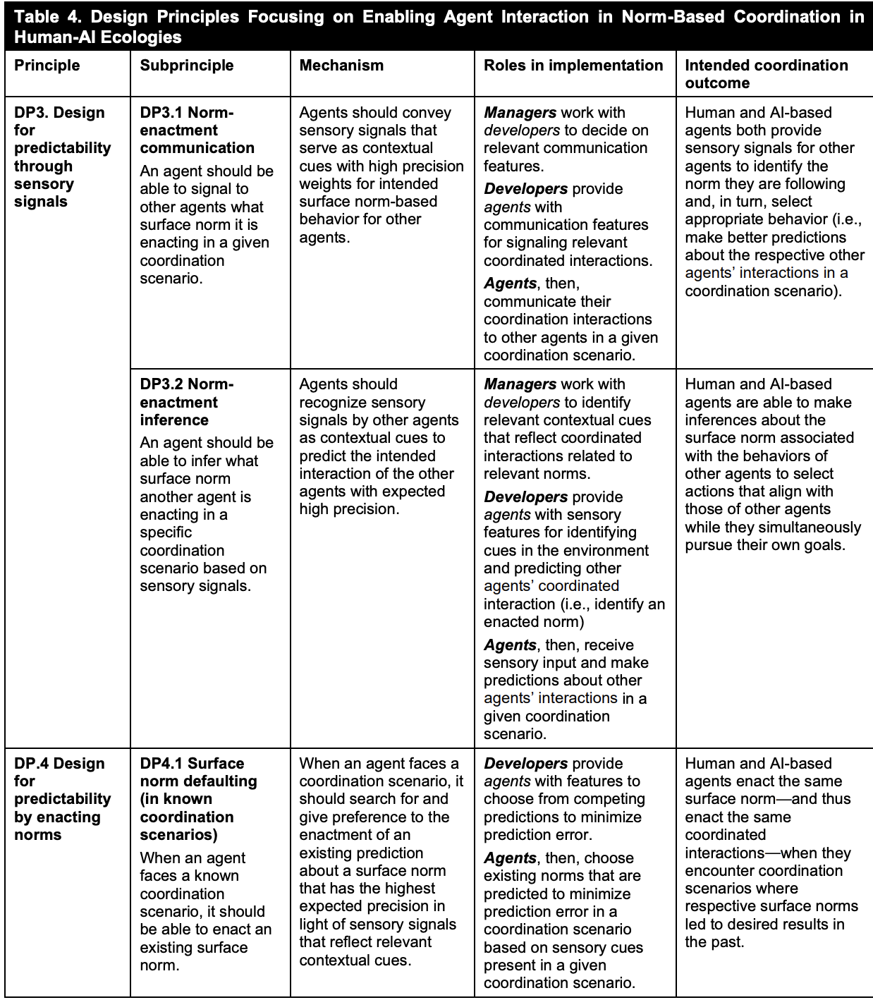
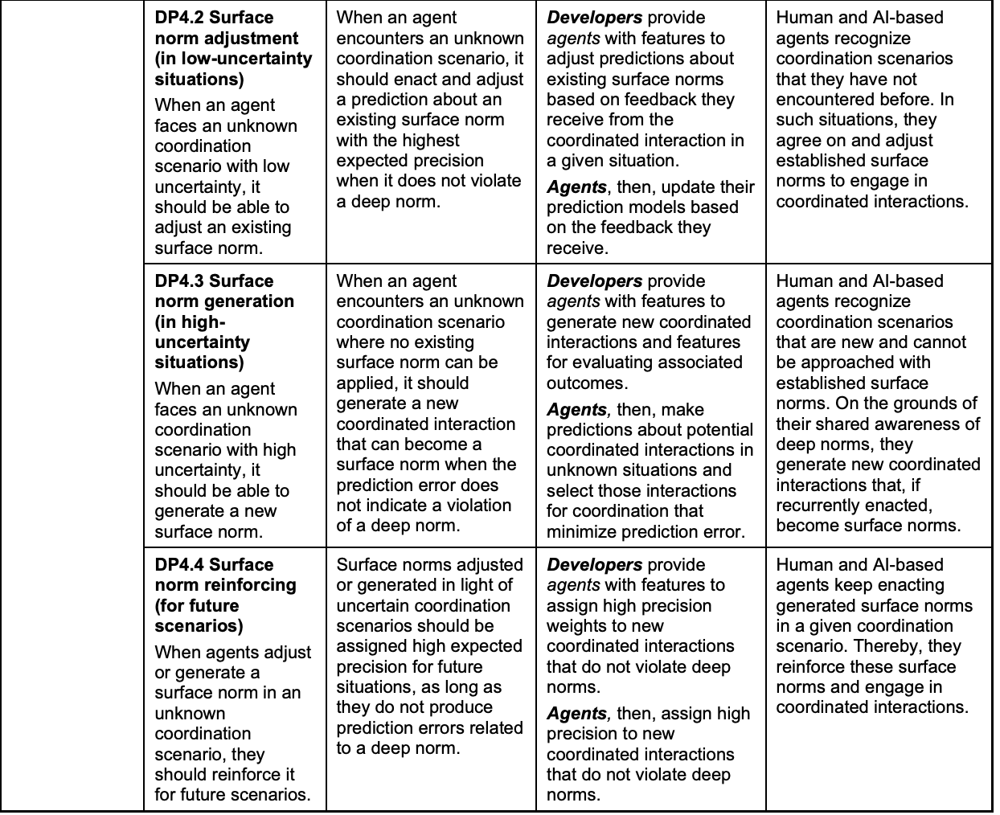
Table 4. Design Principles Focusing on Enabling Agent Interaction (DP3 & DP4) (Grisold et al., 2025)
🧬 Paper 6: Automating in High-Expertise, Low-Label Environments
Liu, Li, Zivkovic & Abbasi (2025) — MIS Quarterly 49(3), 1049-1093
📝 Citation
Rong Liu, Jingjing Li, Zivkovic, M., & Abbasi, A. (2025). "Automating in High-Expertise, Low-Label Environments: Evidence-Based Medicine by Expert-augmented Few-Shot Learning," MIS Quarterly, 49(3), pp. 1049-1093.
Presenters: Kim, Rayna
📚 توضیح فارسی — یادگیری چندنمونهای با کمک متخصص
🔴 مسئله: در بعضی حوزهها مثل پزشکی، برچسبگذاری داده خیلی گران و کم است. یک مرور نظاممند (Systematic Review) در پزشکی به طور متوسط ۶۷ هفته طول میکشد. مشکل اینجاست که ML معمولی به هزاران نمونه برچسبدار نیاز دارد، اما اینجا فقط ۱۰-۲۰ نمونه داریم.
🎯 آرتیفکت DSR: نویسندگان FastSR را میسازند — یک سیستم few-shot learning که با کمک دانش متخصص (expert augmentation) میتواند از تعداد کم نمونه یاد بگیرد و عناصر PICO را استخراج کند.
📊 نتایج کلیدی:
- FastSR با F1@3 حدود ۷۳٪ کار میکند.
- این بهتر از BioBERT (۶۴٪) و خیلی بهتر از GPT-4 Few-Shot (۳۹٪) است.
- میتواند فرایند مرور نظاممند را ۶۵٪ سریعتر کند و ۴۴ هفته و ۷۳,۵۰۰ دلار صرفهجویی کند.
🏗️ FastSR Architecture
| Component | Function |
|---|---|
| Sentence Contextualization | CNNs for semantic representation of medical text |
| Global Context | ProtoNet-based prototypes for article sections (Methods vs. Results) |
| Expert Augmentation | Attention mechanisms to identify text fragments that SR experts focus on |
| Joint Learning | Simultaneous sentence classification + sequence tagging for PICO extraction |
💡 What is PICO?
Population, Intervention, Comparison, Outcome — the standard framework for formulating clinical research questions in Evidence-Based Medicine.
📊 Evaluation Results
| Method | F1@3 Score |
|---|---|
| GPT-4 Few-Shot | 39.23 |
| Fine-tuned BioBERT | 64.17 |
| FastSR (This paper) | ~73.00 |
Datasets tested: Wilson Disease (WD), COVID-19, public EBM-NLP dataset.
Theoretical basis: Compositionality Theory — complex PICO extraction can be decomposed into identifiable semantic and contextual components.
📊 How This Paper Maps to DSR Frameworks
- Hevner (2004) G1: Artifact = FastSR system (instantiation)
- Hevner (2004) G2: Problem = SR bottleneck in EBM (67 weeks average!)
- Hevner (2004) G3: Multifaceted evaluation — benchmarking + expert interviews
- Gregor & Hevner (2013): Improvement (new solution for known problem) or Exaptation (applying FSL to new complex domain)
- Larsen (2025) DSVF: Criterion claim (Is FastSR better than baselines?) + Causal claim (Which components matter?)
🗺️ Mental Map: How the Papers Connect
📚 نقشه ذهنی — چطور پیپرها به هم وصل میشوند
این هفته یک ساختار لایهای دارد. ۴ پیپر اول روششناسی DSR را تعریف میکنند (بنیاد → پوزیشنگذاری → ژانرها → اعتبار). ۲ پیپر آخر این روششناسی را در عمل نشان میدهند.
⚡ نکته کلیدی برای کلاس: وقتی درباره Grisold یا Liu صحبت میکنیم، باید بتوانیم بگوییم: "این پیپر از نظر Hevner چه Guidelineهایی را پوشش میدهد؟ از نظر Gregor & Hevner چه نوع contribution دارد؟ از نظر Baskerville در کدام ژانر پژوهش قرار دارد؟ و از نظر Larsen چه ادعای validity دارد؟"
7 Guidelines
Build + Evaluate"] --> G["Gregor & Hevner (2013)
Contribution Framework
4 types, 3 levels"] G --> B["Baskerville et al. (2015)
Genre Framework
4 genres"] G --> L["Larsen et al. (2025)
Validity Framework
3 knowledge claims"] end subgraph APPLICATION["🔬 DSR Application Papers"] GR["Grisold et al. (2025)
Human-AI Ecologies
Design Theory: 4 DPs"] LIU["Liu et al. (2025)
FastSR
Instantiation: Few-Shot System"] end H --> GR H --> LIU G --> GR G --> LIU L --> GR L --> LIU
📊 Mapping Application Papers to DSR Frameworks
| Framework | Grisold et al. (2025) | Liu et al. (2025) |
|---|---|---|
| Hevner G1: Artifact | Design Theory (4 design principles) | Instantiation (FastSR system) |
| Hevner G2: Relevance | Human-AI coordination challenge | SR bottleneck in EBM |
| Hevner G3: Evaluation | Illustrative scenario (warehouse) | Benchmarking + expert interviews |
| Gregor & Hevner: Type | Invention | Improvement / Exaptation |
| Gregor & Hevner: Level | Level 2 (Nascent Design Theory) | Level 1 (Situated Implementation) |
| Baskerville: Genre | Nomothetic Design (ND) | Idiographic Design (ID) → Idiographic Science (IS) |
| Larsen: Validity Claims | Criterion (useful guardrails?) + Context (what ecologies?) | Criterion (F1 vs baselines) + Causal (which components?) |
🔗 Connections to Earlier Weeks
- Week 2 (Baird & Maruping, 2021): Grisold's "guardrails" connect directly to the agentic IS delegation framework. Both deal with how humans coordinate with autonomous AI.
- Week 3 (Gregor, 2006): Gregor's Type V theory (Design and Action) is exactly what Grisold produces. The DSR papers this week complete the theory typology from Week 3.
- Week 5 (Liu et al., 2025): The human-AI delegation dynamics paper uses behavioral methods. This week's Liu paper uses DSR methods to solve a similar class of problem (human-AI collaboration in expert domains).
- Week 7 (Analytical Modeling): Last week was mathematical models. This week is artifact-building. Together they show IS has 3 major research approaches: behavioral, analytical, and design science.
📝 Week 9 Homework — Evaluating Grisold et al. (2025) Using Gregor & Hevner (2013)
Grisold et al. (2025) propose norm-based coordination for what they call "human-AI ecologies," environments where humans and autonomous AI agents work together. Their argument is that once AI agents start learning and adapting on their own, you cannot rely on hard-coded rules to keep everything in order. So they develop design principles based on social norms instead. Below I go through how this paper holds up against the evaluation criteria from Gregor and Hevner (2013).
Where it sits in the 2×2
The contribution framework in Gregor and Hevner (2013) has two axes: how mature the problem domain is, and how mature the existing solutions are. That gives you four quadrants: Invention, Improvement, Exaptation, and Routine Design.
Grisold et al. claim Invention (p. 1260), meaning both the problem and the solution are new. I think the claim is fair, but not bulletproof. The problem side is strong: coordinating autonomous AI agents with humans in an open ecology really is a new challenge, because earlier governance work assumed humans stay in control and AI follows instructions. Once AI becomes agentic, that breaks. The solution side is also genuinely new, combining Predictive Processing Theory with Social Norm Theory for coordination is something nobody had done before in IS.
But you could push back on the "new problem" part. Multi-agent coordination has been studied in computer science for decades. Grisold et al. are framing it differently by focusing on sociotechnical ecologies where humans and AI coexist, but the core problem of getting multiple agents to coordinate is not brand new. The Invention claim holds, I think, but it is close to the boundary with Exaptation.
Contribution level
Gregor and Hevner distinguish three levels. Level 1 is a working artifact, Level 2 is a nascent design theory (like design principles), and Level 3 is a full design theory with explanatory and predictive power.
Grisold et al. go with Level 2. They produce four design principles with ten subprinciples. No prototype, no implementation, just principles grounded in theory. This is the right call. The principles abstract from a specific warehouse scenario into something more general, so it is more than just Level 1. But they have not tested these principles in multiple settings, which means Level 3 is not there yet. They are upfront about this limitation.
Theoretical grounding
This is where the paper is strongest. Gregor and Hevner (2013) distinguish descriptive knowledge (Ω) from prescriptive knowledge (Λ). DSR papers contribute Λ, but good ones also build on Ω to explain why their designs should work.
Grisold et al. do both. The design principles themselves are Λ. The Ω comes from two kernel theories: Predictive Processing Theory (how agents form predictions + act on them + update when they get it wrong) and Social Norm Theory (how shared expectations coordinate behavior without centralized control). What I found convincing is how the deep norm / surface norm distinction falls out naturally from this combination. Deep norms are stable values like "protect safety." Surface norms are the flexible operational rules that change depending on context, like "robots yield to humans at intersections." That layered structure gives the design principles a rationale that feels grounded, not ad hoc.
Structure and evaluation
Gregor and Hevner recommend a seven-section schema for DSR papers. Grisold et al. follow it, and the artifact description takes up the biggest chunk, which is what the schema calls for. The method section references both Gregor and Hevner (2013) and Gregor (2006). They also explicitly signal their contribution type early in the paper (p. 1242): "theory of design and action (Type V)." They map themselves to Invention and Level 2 in the discussion. That kind of transparent signaling is exactly what Gregor and Hevner ask for, and it makes the paper easier to evaluate on its own terms.
The weak spot is evaluation. They use an illustrative scenario set in an autonomous warehouse with humans, drones, and robots. It helps explain how the design principles would play out in practice, but it does not give you empirical evidence that they actually work. A case study or even a prototype would have been much stronger evidence. The authors know this. They call the scenario a starting point and say future work should build and test real implementations. For a nascent design theory at Level 2, an illustrative scenario is not unusual, but it does limit how much we can say about whether these principles would hold up in a real deployment.
The bigger question the paper opens up is how to govern AI agents that are too autonomous for hard rules but still need to stay within acceptable boundaries. Norm-based coordination feels like a real alternative to the traditional control-based approach. Whether it actually works in practice is the open question, and answering it will require going from Level 2 to Level 1 (building something) and eventually testing it properly.